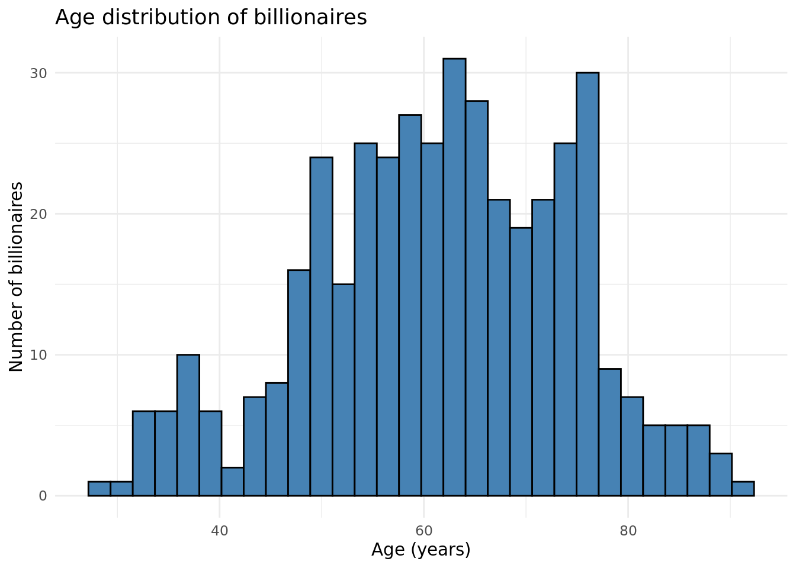
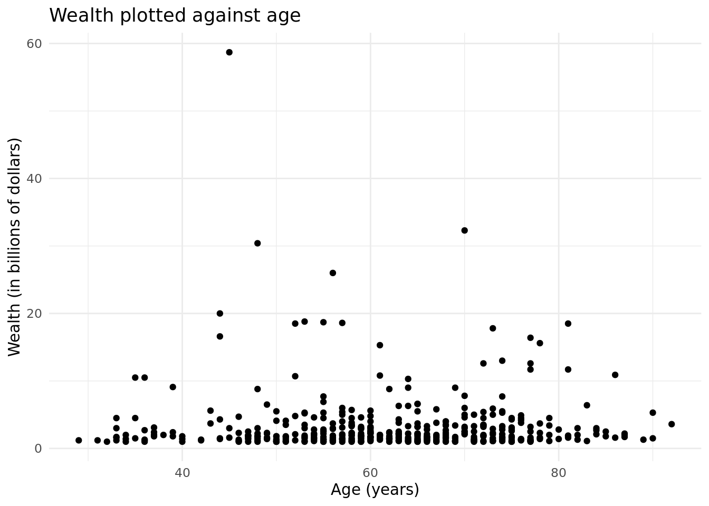
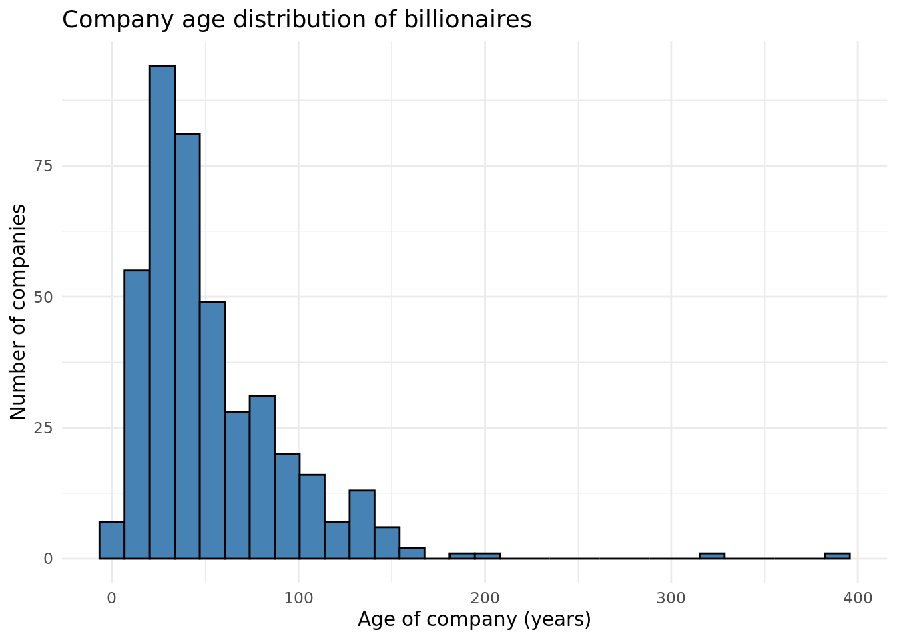
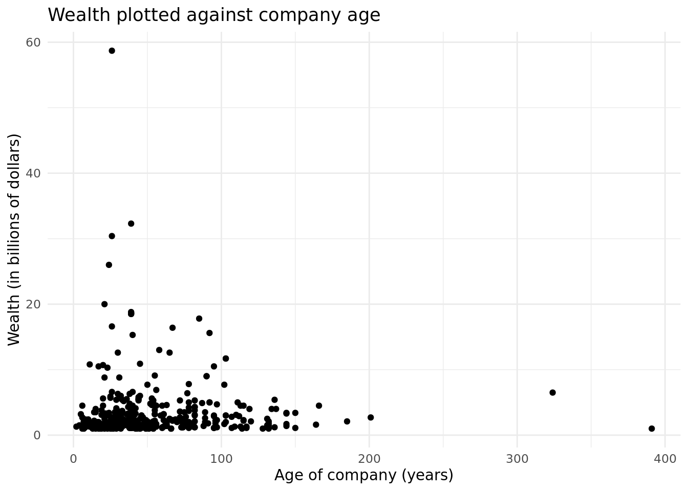
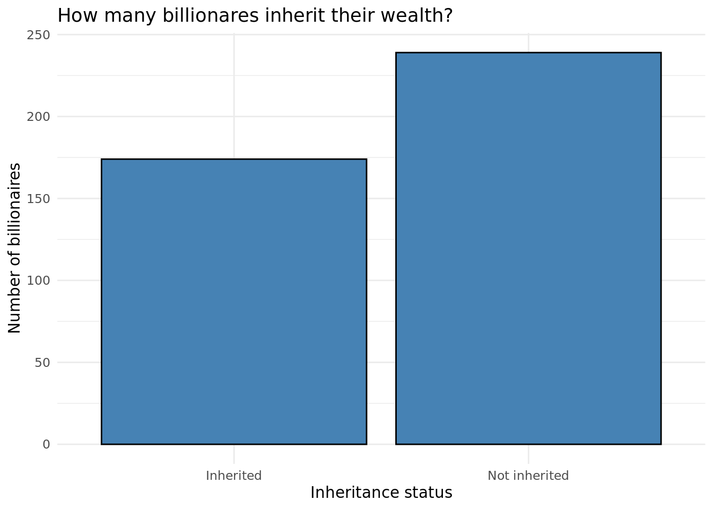
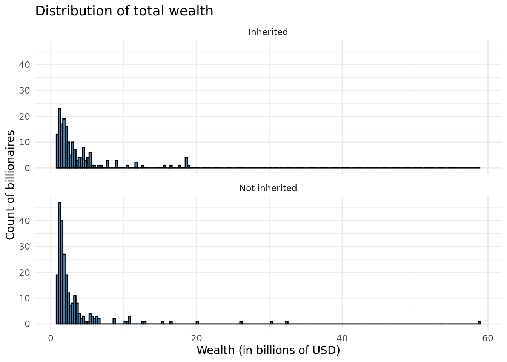
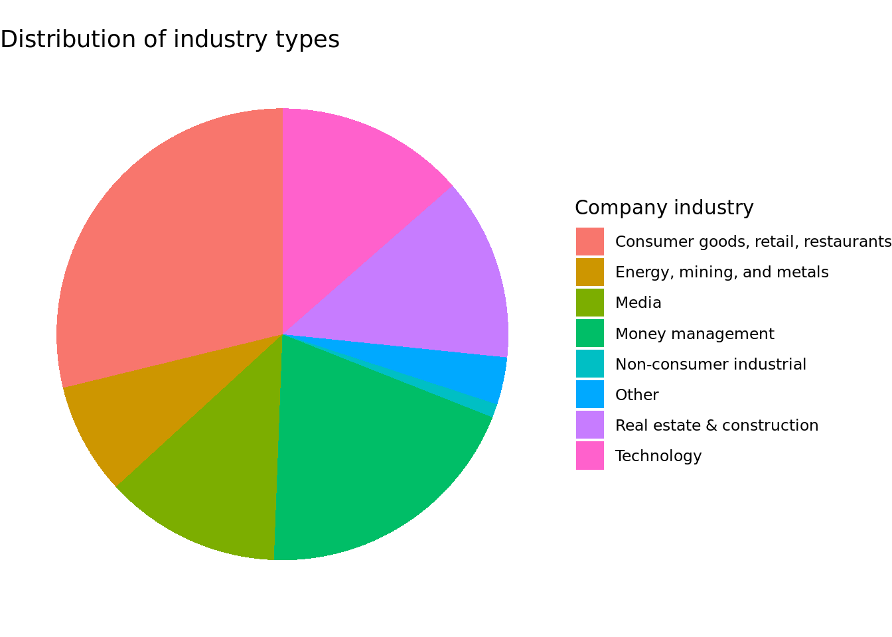
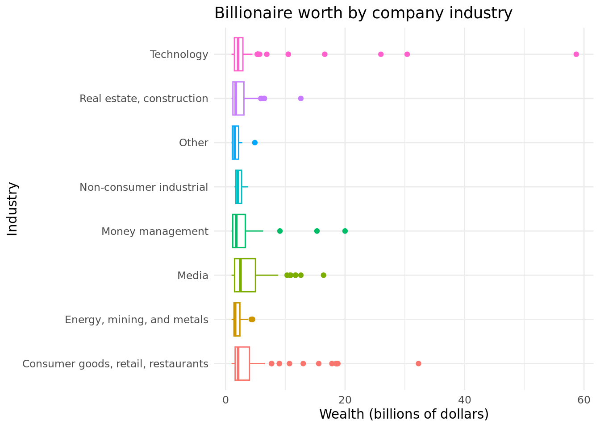
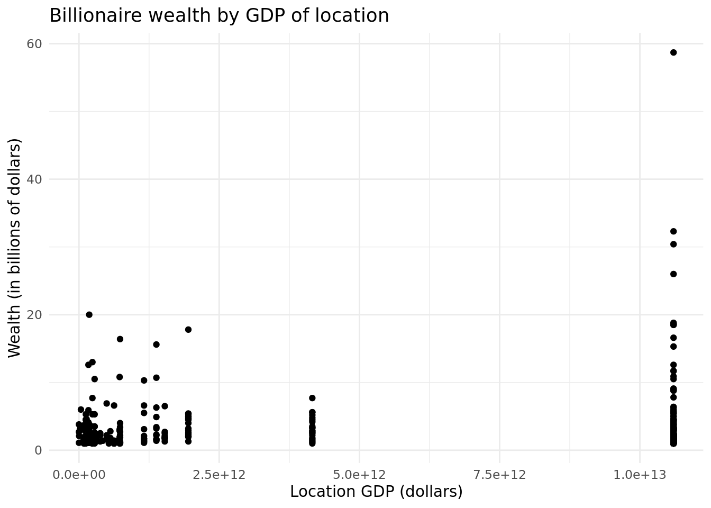

Sevenr Project
Report
Introduction and data
Rows: 2,614
Columns: 22
$ name <chr> "Bill Gates", "Bill Gates", "Bill Gates", "Wa…
$ rank <int> 1, 1, 1, 2, 2, 2, 3, 3, 3, 4, 4, 4, 5, 5, 5, …
$ year <int> 1996, 2001, 2014, 1996, 2001, 2014, 1996, 200…
$ company.founded <int> 1975, 1975, 1975, 1962, 1962, 1990, 1896, 197…
$ company.name <chr> "Microsoft", "Microsoft", "Microsoft", "Berks…
$ company.relationship <chr> "founder", "founder", "founder", "founder", "…
$ company.sector <chr> " Software", " Software", " Software", " Fina…
$ company.type <chr> "new", "new", "new", "new", "new", "privatiza…
$ demographics.age <int> 40, 45, 58, 65, 70, 74, 0, 48, 77, 68, 56, 83…
$ demographics.gender <chr> "male", "male", "male", "male", "male", "male…
$ location.citizenship <chr> "United States", "United States", "United Sta…
$ location.country.code <chr> "USA", "USA", "USA", "USA", "USA", "MEX", "CH…
$ location.gdp <dbl> 8.10e+12, 1.06e+13, 0.00e+00, 8.10e+12, 1.06e…
$ location.region <chr> "North America", "North America", "North Amer…
$ wealth.type <chr> "founder non-finance", "founder non-finance",…
$ wealth.worth.in.billions <dbl> 18.5, 58.7, 76.0, 15.0, 32.3, 72.0, 13.1, 30.…
$ wealth.how.category <chr> "New Sectors", "New Sectors", "New Sectors", …
$ wealth.how.from.emerging <chr> "True", "True", "True", "True", "True", "True…
$ wealth.how.industry <chr> "Technology-Computer", "Technology-Computer",…
$ wealth.how.inherited <chr> "not inherited", "not inherited", "not inheri…
$ wealth.how.was.founder <chr> "True", "True", "True", "True", "True", "True…
$ wealth.how.was.political <chr> "True", "True", "True", "True", "True", "True…The dataset we are working with is a large listing of billionaires across the world along with information about them collected at three different time points. There are 2614 observations and 22 variables. Not every observation is a unique billionaire; many are repeated up to three times (one at each time point). In addition, not every 22 variable is statistically interesting; many, such as name, rank, and company.name are identifying variables. However, the other variables are statistically useful and interesting, and our goal is to investigate them.
The dataset was created in 2016 by Caroline Freund and Sarah Oliver, who are (or were) researchers at the Peterson Institute for International Economics. They compiled the list of individuals from Forbes billionaire lists dating from 1996 to 2015. A large percentage of the additional information collected was publicly available, coming from sources such as Forbes, news articles, and company websites.
One caveat about this dataset, and any data categorizing wealth, is that defining wealth is a subjective matter. For example, Forbes had to make many choices in determining who to include in the lists used as sources for this dataset. One such choice was to exclude billionaires that obtained wealth from official positions (e.g. high government roles, state leader positions, etc.). Another choice was to exclude billionaires who obtained their wealth via illegal methods. In addition, individuals and companies may fabricate what they publish about themselves, or simply characterize themselves subjectively. Thus, when drawing conclusions from analysis of this dataset, we must be careful not to generalize statements about legal nonpolitical billionaires to any person on the planet who accumulates wealth.
Relevant variables
As mentioned, there are 22 variables, of which some are identifying variables, and the rest are more useful or interesting. They are listed in the table:
| Variable name (unmodified) | Meaning |
|---|---|
| company.relationship | relationship to the company (founder, etc.) |
| company.sector | the sector of the economy to which the business belongs |
| company.type | type of business of the company |
| demographics.age | age of the individual |
| location.citizenship | name of the country for which the individual has citizenship |
| location.country.code | 3-letter country code for which the individual has citizenship |
| location.gdp | gross domestic product of the country for which the individual has citizenship |
| location.region | part of the world where the individual lives |
| wealth | net worth of the individual in billions of USD |
| wealth.how.category | where the individual’s money came from |
| wealth.how.industry | the specific industry the individual profited from |
| wealth.how.inherited | whether the individual’s wealth was inherited or not |
| wealth.how.was.founder | whether the individual founded their company or not |
Of these variables, the wealth variable (underlined and italicized) makes for an interesting response variable; that is, we are interested in seeing how this variable could possibly be affected by the other variables. One variable we are especially curious about exploring, given today’s discourse about where wealth comes from, is wealth.how.inherited; do the billionaires who inherit some wealth to begin with accumulate more differently from those who are “self-made”?
Literature Review
https://www.tandfonline.com/doi/epdf/10.1080/00472330701822355?needAccess=true&role=button
The article discusses the rise of billionaires in several major countries and regions in the world, providing historical, social, and political context. The countries/regions mentioned are Russia, Latin America, China, and India. The major project relevant details are the histories of each region, and if the billionaires inherited their wealth. For example, India is undergoing extreme class polarization; while the billionaires are used as evidence of India’s growing wealth, in reality people are growing poorer and poorer. The article also lists the 3 general stages of becoming a billionaire in reference to these regions. What ties the regions together is that they are developing areas; although billionaires are emerging, one cannot conclude that the people themselves are growing wealthier.
The article only focuses on four regions in the world in relation to wealth of a country and number of billionaires. Our research question aims to expand the scope to the entire world by asking a very similar question, but with all countries in the dataset in mind.
Research question and hypothesis
Thus, our research question is: what is the best model for predicting billionaire wealth? That is, what variables would be included in a multivariate linear regression with wealth.in.billions as the response variable?
Our hypothesis is that variables such as wealth.how.category, location.gdp, wealth.inherited, and age will be included, as those seem to be pertinent to wealth accumulation.
Methodology
Data cleaning
Before any analysis, the dataset was tidied up.
We filtered for a single year instead of working with the data over time to avoid complications. We chose the year 2001, because of the other variables, location.gdp was of interest, and 2001 is the most recent year for which there is data on GDP across the world (there is no GDP data for 2014). The variable wealth was also renamed to just wealth.
# A tibble: 3 × 2
year mean_gdp
<int> <dbl>
1 1996 3.51e12
2 2001 5.84e12
3 2014 0 Another variable that is of interest is wealth.how.industry, whose values are strings representing the industries that made the billionaires wealthy. After renaming the variable, we combined related industries together. For example, “Venture capital”, “Hedge funds”, “Diversified financial”, and “Private equity/leveraged buyout” all fit into the “Money management” industry.
demographics.age is another interesting variable; however, several billionaires have an age of 0 listed, which meant some had died before 2001. Because researching dozens of individual death dates or ages demands excessive effort, we decided to filter out any age with 0.
We tidied up company.type for use by merging misspelled or mistyped values. In the end, the three values are “new”, “acquired”, and “other”, with “new” taking precedent over “acquired”.
How the individual is related to their company (e.g. CEO, investor, founder, etc.) is represented by company.relationship. We cleaned it up similarly to company.type. The unique relation types are founder, chairman, CEO, owner, investor, and relation, with founder taking precedent over CEO, CEO over the joint category of chairman/investor/owner, and chairman/investor/owner over relation. President was collapsed into CEO, and employee and lawyer were collapsed into relation. Two observations where company relation is unknown were filtered out.
How old the company is may also give some insight. We calculated the age of the company by subtracting its founding year (from company.founded) from 2001, saving the results to a column named company.age. A single observation with 0 as a founding year was dropped.
Finally, the variable inherited is changed to a binary categorical variable. The end result of the cleaning is a dataset with 413 observations, each of which is a billionaire with information on them from the year 2001.
Rows: 413
Columns: 24
$ name <chr> "Bill Gates", "Warren Buffett", "Paul Allen",…
$ rank <int> 1, 2, 3, 4, 6, 7, 8, 9, 10, 10, 12, 13, 14, 1…
$ year <int> 2001, 2001, 2001, 2001, 2001, 2001, 2001, 200…
$ company.founded <int> 1975, 1962, 1975, 1977, 1980, 1962, 1962, 196…
$ company.name <chr> "Microsoft", "Berkshire Hathaway", "Microsoft…
$ company.relation <chr> "founder", "founder", "founder", "founder", "…
$ company.sector <chr> " Software", " Finance", "technology", " soft…
$ company.type <chr> "new", "new", "new", "new", "new", "new", "ne…
$ age <int> 45, 70, 48, 56, 44, 53, 55, 57, 52, 81, 73, 4…
$ demographics.gender <chr> "male", "male", "male", "male", "male", "male…
$ location.citizenship <chr> "United States", "United States", "United Sta…
$ location.country.code <chr> "USA", "USA", "USA", "USA", "SAU", "USA", "US…
$ location.gdp <dbl> 1.06e+13, 1.06e+13, 1.06e+13, 1.06e+13, 1.83e…
$ location.region <chr> "North America", "North America", "North Amer…
$ wealth.type <chr> "founder non-finance", "founder non-finance",…
$ wealth <dbl> 58.7, 32.3, 30.4, 26.0, 20.0, 18.8, 18.7, 18.…
$ wealth.how.category <chr> "New Sectors", "Traded Sectors", "New Sectors…
$ wealth.how.from.emerging <chr> "True", "True", "True", "True", "True", "True…
$ industry <chr> "Technology", "Consumer goods, retail, restau…
$ wealth.how.inherited <chr> "not inherited", "not inherited", "not inheri…
$ wealth.how.was.founder <chr> "True", "True", "True", "True", "True", "True…
$ wealth.how.was.political <chr> "True", "True", "True", "True", "True", "True…
$ company.age <dbl> 26, 39, 26, 24, 21, 39, 39, 39, 39, 39, 85, 2…
$ inherited <fct> Not inherited, Not inherited, Not inherited, …Preliminary visualizations
The mean age of the billionaires is around 61.5762712 years old. Below are graphs of the age distribution and wealth plotted against age. We see that age follows a bell curve distribution. The relationship between age and wealth seems weak visually; however, age is still an interesting variable to consider.


The mean company age of the billionaires is 53.3510896. Below, company age is plotted in similar fashion as billionaire age. Most companies are younger than 100 years. It seems as if the older the company, the less wealthy the associated billionaire.


Just how many billionaires inherit their wealth? The bar plot below shows that a while most of the billionaires do not inherit their wealth, the difference in number between the two groups does not seem too significant.

Below is a histogram displaying the distribution of total wealth when faceted by inheritance status. The data skews right for both distributions, suggesting that the majority of both types of billionaires have less than 20 billion USD, which is not a small amount by any means, but also not the most compared to some other billionaires

# A tibble: 2 × 2
inherited mean_wealth
<fct> <dbl>
1 Inherited 3.65
2 Not inherited 3.29The mean wealth of those who inherit their wealth seems to be higher than those who didn’t.
Next, we visualize the proportion of various company industries, as well as wealth distributions by industry.


The proportions and numbers are summarized below; again, they show that wealth varies between the industries.
# A tibble: 8 × 4
industry mean_wealth count percent_industry
<chr> <dbl> <int> <dbl>
1 Consumer goods, retail, restaurants 3.97 119 68.4
2 Energy, mining, and metals 2.08 33 19.0
3 Media 4.11 52 29.9
4 Money management 2.76 81 46.6
5 Non-consumer industrial 2.35 4 2.30
6 Other 1.86 14 8.05
7 Real estate, construction 2.59 54 31.0
8 Technology 4.80 56 32.2 The mean GDP of all the locations the billionaires are based is 6.2615877^{12}. Below is a scatterplot displaying the relationship between GDP and wealth. It appears there may be an upward trend as the GDP of the billionaire’s location increases.

Multivariate linear regression
We plan to use multivariate linear regression to construct a model because we want to consider the effects of several of the variables in the dataset simultaneously on the wealth variable. The main question when constructing a multivariate linear regression model is which variables should be included and which variables should be excluded. One strategy to answer this question is backwards elimination. During backwards elimination, one starts with all variables of interest in the model. Then, each variable is excluded one at a time and the model is assessed to see if exclusion of the variable has improved it. If the model is improved with the variable gone, then it is removed and the process repeats until the model cannot be improved by variable exclusion any further. The criterion we use for variable exclusion is the AIC value, which characterizes how well the model fits the data. A lower AIC value means a better-fitting model, so if removing a variable results in a model with a lower AIC, then that is motivation for removing that variable from the model. We start with 8 variables which we considered interesting: age, company age, company relation, company type, industry, inheritance status, GDP, and wealth type.
Results
Tables showing the AIC values at each step of the process are shown. The variable name is the variable that was removed from the model to generate the corresponding AIC value.
| variable_list | aic_values |
|---|---|
| all included | 2483.899 |
| -age | 2482.594 |
| -company.age | 2482.317 |
| -company.relation | 2477.996 |
| -company.type | 2480.748 |
| -industry | 2487.738 |
| -inherited | 2482.089 |
| -location.gdp | 2484.224 |
| -wealth.type | 2480.405 |
Removed company.relation
| variable_list | aic_values |
|---|---|
| all included | 2477.996 |
| -age | 2476.723 |
| -company.age | 2476.416 |
| -company.type | 2475.008 |
| -industry | 2481.817 |
| -inherited | 2476.176 |
| -location.gdp | 2478.294 |
| -wealth.type | 2475.352 |
Removed company.type
| variable_list | aic_values |
|---|---|
| all included | 2475.008 |
| -age | 2473.720 |
| -company.age | 2473.288 |
| -industry | 2478.862 |
| -inherited | 2473.324 |
| -location.gdp | 2475.231 |
| -wealth.type | 2472.496 |
Removed wealth.type
| variable_list | aic_values |
|---|---|
| all included | 2472.496 |
| -age | 2470.944 |
| -company.age | 2471.113 |
| -industry | 2474.538 |
| -inherited | 2473.264 |
| -location.gdp | 2471.623 |
Removed age
| variable_list | aic_values |
|---|---|
| all included | 2470.944 |
| -company.age | 2469.364 |
| -industry | 2472.539 |
| -inherited | 2471.350 |
| -location.gdp | 2470.104 |
Removed company.age
| variable_list | aic_values |
|---|---|
| all included | 2469.364 |
| -industry | 2471.357 |
| -inherited | 2469.406 |
| -location.gdp | 2468.621 |
Removed location.gdp
| variable_list | aic_values |
|---|---|
| all included | 2468.621 |
| -industry | 2470.790 |
| -inherited | 2468.364 |
Removed inherited.
The final model only has the variable industry. Below, the coefficients of this model are tabulated; the intercept industry is “Consumer goods, retail, and restaurants”.
# A tibble: 8 × 2
term estimate
<chr> <dbl>
1 (Intercept) 3.97
2 industryEnergy, mining, and metals -1.89
3 industryMedia 0.140
4 industryMoney management -1.21
5 industryNon-consumer industrial -1.62
6 industryOther -2.11
7 industryReal estate, construction -1.38
8 industryTechnology 0.831[1] 0.03561891The \(R^2\) value of this model is 0.03561891.
Results
After several rounds of backwards elimination, the model only consists of the variable industry, which represents the various company industries. Thus, we conclude the best model for predicting billionaire wealth is actually a univariate linear regression model consisting of the variable industry. This means that when trying to predict billionaire wealth using our model, one needs to look at the coefficient associated with each industry type to determine whether wealth tends to be higher or lower in that industry.
Although the several rounds of backwards elimination resulted in industry being the final variable, a close look at the \(R^2\) value of the model shows that it is only 0.0356, which is not high. A low \(R^2\) value means that very little of the variability in the data is captured by the model. Thus, while being the best variable out of the original eight, it is not a very good predictor on its own. This result makes sense; wealth accumulation is not as simple as entering the right industry type. After all, there are many, many people working in each of the listed industries. However, only a few are billionaires. In addition, the fact that most of the variables did not make it into the final model does not mean that becoming a billionaire is a totally random process. There must be reasons why some people accumulate fantastic amounts of wealth while others don’t. It is likely that such reasons are incredibly complex, and either may not be included in dataset as variables, or may be too complicated to even quantify or categorize.
There are several directions we could go in for future studies. For one, a multivariate model using the variables can still be constructed using forward selection. We chose backwards elimination because we wanted to consider as many variables at once at the beginning. However, by doing forward selection, it is possible to obtain a different model than the one determined via backwards elimination. We could also investigate each variable separately, and observe whether there are any particularly high \(R^2\) values associated with them. Finally, there clearly must be future research done to uncover other possible variables. Either way, while there are several factors that are known to lead to wealth accumulation, combining them into a mathematical model to predict wealth still remains an elusive task.